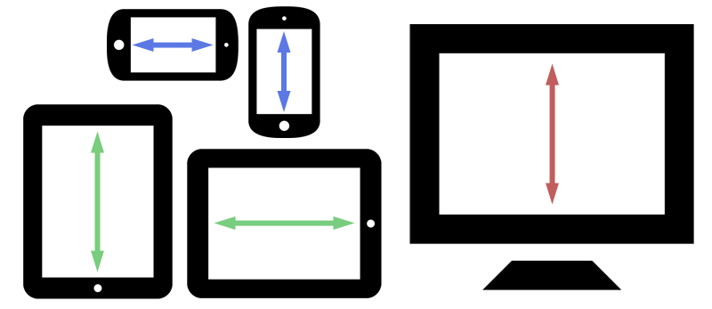
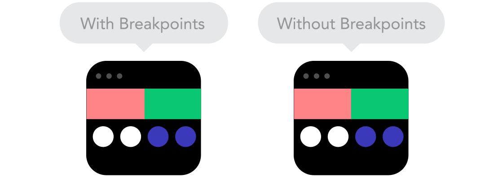
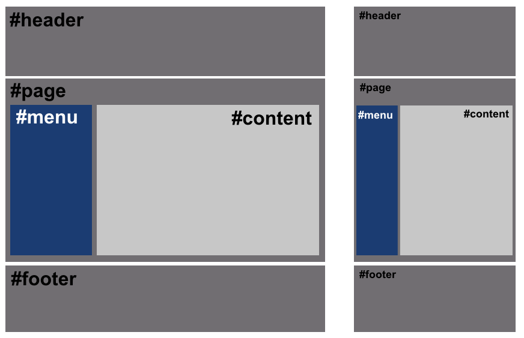
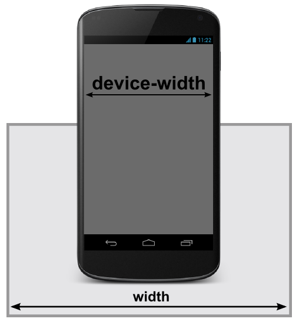
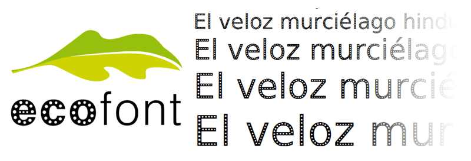
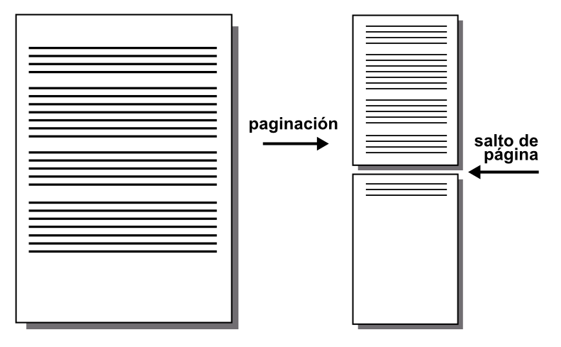

Responsive Web Design¶
¿Qué es Responsive Design?¶
En la actualidad, el uso de todo tipo de dispositivos móviles se ha disparado, no sólo de <
Cada vez es más frecuente acceder a Internet con diferentes tipos de dispositivos, que a su vez tienen diferentes pantallas y resoluciones, con distintos tamaños y formas, que hacen que se consuman las páginas webs de formas diferentes, apareciendo por el camino también diferentes necesidades, problemas y soluciones.

Por lo tanto, en la actualidad, cuando diseñamos una web, esta debe estar preparada para verse correctamente en diferentes resoluciones, cosa que, a priori no es sencilla. Antiguamente, se llegó al punto de preparar una web diferente dependiendo del dispositivo o navegador que utilizaba el usuario, pero era algo que se terminó descartando, ya que no era práctico.
Por suerte, esos tiempos han quedado atrás, y la máxima que se sigue hoy es diseñar una sola web, que se adapte visualmente al dispositivo utilizado.
Hoy en día se le denomina Responsive Web Design (o RWD) a los diseños web que tienen la capacidad de adaptarse al tamaño y formato de la pantalla en la que se visualiza el contenido, respecto a los diseños tradicionales en los que las páginas web estaban diseñadas sólo para un tamaño o formato específico, y no tenían esa capacidad de adaptación.
Aunque en principio el concepto de web adaptativa es muy sencillo de comprender, aplicarlo puede ser todo un quebradero de cabeza si no se conocen bien las bases y se adquiere experiencia. En MediaQueri.es puedes encontrar algunos ejemplos de páginas que utilizan Responsive Web Design para tener clara la idea.
Conceptos básicos¶
En el excelente artículo 9 basic principles of responsive web design, de Froont, hay una estupenda explicación visual de algunos conceptos básicos necesarios para entender correctamente el Responsive Web Design. Son los siguientes:
El primero de ellos es la diferencia entre diseño responsivo y diseño adaptativo. Como se puede ver en la imagen a continuación, un diseño responsive responde (valga la rebuznancia) en todo momento a las dimensiones del dispositivo, mientras que un diseño adaptable es aquel que se adapta, pero no necesariamente responde en todo momento:

Veremos que esto puede ser la diferencia entre aplicar correctamente conceptos como media queries, porcentajes y propiedades de ancho máximo y mínimo, que veremos más adelante.
Por otro lado, para trabajar correctamente en diseños responsive hay que tener en cuenta que debemos trabajar con unidades relativas e intentar evitar las unidades fijas o estáticas, las cuales no responden a la adaptación de nuestros diseños flexibles:

Otra forma interesante de trabajar esa respuesta de los diseños responsive es utilizar propiedades como min-width o max-width, donde definimos tamaños mínimos o máximos, para que los elementos de nuestra página puedan ampliar o reducirse según sea necesario dependiendo de la pantalla del dispositivo utilizado.
Con estas propiedades podemos crear diseños que aprovechen al máximo toda la pantalla de dispositivos pequeños (como móviles o tablets), mientras que establecemos unos máximos en pantallas de dispositivos grandes, para crear unos espacios visuales que hacen que el diseño sea más agradable:

Otro concepto, que a la misma vez es una característica muy atractiva en nuestros diseños responsive es la de mantener el flujo de los elementos cuando cambian de tamaño y evitar que estos se solapen unos con otros.
Si estamos habituados a trabajar en diseños más estáticos que no están preparados para móviles, suele ser duro hacer ese cambio. Sin embargo, una vez lo conseguimos, todo resulta mucho más fácil y conseguiremos transmitir una buena respuesta y fluidez visual:

Esto último va muy de la mano del sistema habitual de recolocación de elementos que se suele seguir en los diseños Responsive Design. Como se puede ver en la siguiente imagen, en un diseño responsive se utilizan ciertos <
Por ejemplo, se suele pensar que en una resolución de escritorio queremos mostrar la información dentro de una cuadrícula (grid) de 4 ó 5 celdas de ancho, mientras que en la versión de tablet será sólo de 3 celdas de ancho (el resto se desplazará a la siguiente fila) y en móviles será una sola celda de ancho, mostrándose el resto de celdas haciendo scroll hacia abajo:

Esta forma de trabajar nos proporciona múltiples ventajas:
- Es mucho más sencillo mostrar la misma información desde diseños de pantalla grande.
- Ayuda a evitar la mala práctica de ocultar bloques de información en dispositivos móviles.
- Incentiva a diseñar siguiendo buenas prácticas para facilitar la creación responsive.
Preparación previa¶
Antes de comenzar a crear un diseño web preparado para móviles, es importante tener claro ciertos detalles:
- A priori, ¿Cuál es tu público objetivo? ¿móvil o escritorio? ¿ambos?
- Debes conocer las resoluciones más utilizadas por tu público potencial
- Debes elegir una estrategia acorde a los datos anteriores
En primer lugar, es importante conocer los formatos de pantalla más comunes con los cuales nos vamos a encontrar. Podemos consultar páginas como MyDevices, la cuál tiene un apartado de comparación de dispositivos, donde se nos muestra un listado de dispositivos categorizados en smartphones, tablets u otros dispositivos con las características de cada uno: dimensiones de ancho, alto, radio de píxels, etc...
Una vez estés familiarizado con estos detalles, es importante conocer el público de tu sitio web. ¿Acceden más usuarios desde móvil o desde escritorio? ¿Predominan las tablets o los móviles? ¿Tu objetivo es tener más usuarios de móvil o de escritorio?
Consulta con algún sistema de estadísticas como Google Analytics para comprobar que tipo de público tienes actualmente. También es aconsejable echar un vistazo a información externa como las que nos proporcionan estadísticas globales anónimas de Global StatCounter, para hacernos una idea de los atributos más comunes.
Estrategias de diseño¶
Por último, es aconsejable decidirse por una estrategia de diseño antes de comenzar. Aunque existen otras estrategias, las dos vertientes principales más populares son las siguientes:
| Estrategia | Descripción |
|---|---|
| Mobile first | Primero nos enfocamos en dispositivos móviles y luego pensamos en otros. |
| Desktop first | Primero nos enfocamos en dispositivos de escritorio, y luego pensamos en otros. |
La estrategia Mobile-first es la que utilizan los diseñadores de sitios webs en las que su público objetivo es mayoritariamente usuario de móvil. Ejemplos como una web para comprar billetes de transporte, la web de un juego o aplicación móvil o una web para pedir cita en un restaurante podrían ser, a priori, una buena elección para utilizar Mobile-first.
Esta estrategia hace que el desarrollo en escritorio sea muy sencillo, ya que se reduce a tener un diseño de móvil en escritorio e ir añadiendo nuevas secciones o partes para <
Por otro lado, la estrategia Desktop-first suele interesar más a los diseñadores de sitios webs en las que el público objetivo son usuarios de escritorio. Por ejemplo, una página de una aplicación para PC/Mac o similares, podría ser una buena opción para la estrategia Desktop-first. En ella, hacemos justo lo contrario que en la anterior, lo primero que diseñamos es la versión de escritorio, y luego vamos descargando detalles o recolocando información hasta tener la versión para dispositivos móviles.
Bases del Responsive Design¶
Como explicamos en el capítulo anterior, hay ciertos conceptos que hay que tener claros antes de comenzar con el Responsive Design. En esta sección vamos a ver como llevarlos a la práctica con código.
Diseño con porcentajes¶
El primer paso para crear un diseño que se adapte correctamente, es comenzar a familiarizarse con un tipo de unidades relativas: los porcentajes. Recordemos que los porcentajes son relativos al contenedor padre, por lo que si especificamos un porcentaje a un elemento, el navegador va a tomar dicho porcentaje del contenedor.
Nota: Al comenzar, algunos diseñadores tienen una percepción incorrecta de que los porcentajes toman el tamaño dependiendo de lo que mide la ventana del navegador. Realmente los porcentajes dependen siempre del tamaño del elemento padre que los contiene. Si queremos basarnos en el tamaño del navegador, hay que usar unidades de viewport.
Podemos comenzar usando porcentajes con las propiedades width en un ejemplo sencillo. Si establecemos un ancho de 100% (valor por defecto en elementos de tipo block, no hace falta indicarlo) a los elementos grises que vemos a continuación (#header, #page y #footer), un 30% al azul (#menu) y un 70% al gris claro (#content) podríamos obtener este diseño:

El código utilizado sería algo parecido a lo siguiente:
<div id="header"></div>
<div id="page">
<div id="menu"></div>
<div id="content"></div>
</div>
<div id="footer"></div>
Nótese que los elementos #menu y #content se encuentran dentro de #page. Tengan en cuenta que, estamos utilizando id en este ejemplo, aunque habíamos comentado que lo ideal quizás sería utilizar clases.
Por su parte, el código CSS tendría esta pinta:
div {
/* Ponemos un alto mínimo, por defecto es 0 */
min-height: 200px;
/* Dibujamos un borde para ver límites */
border: 2px solid black;
}
#header, #page, #footer {
background: grey;
}
#menu, #content {
/* Necesario para que los elementos estén en horizontal */
display: inline-block;
}
#menu {
background: blue;
width: 30%;
}
#content {
background: lightgrey;
width: 70%;
}
Sin embargo, utilizar porcentajes no nos garantiza un diseño adaptativo de calidad, hay que comprender otros detalles. El primer problema que encontraremos será que si sumamos el tamaño de los elementos (70% + 30%) junto a los bordes (2px por cada lado), la suma es superior al 100% del contenedor padre, por lo que no cabe en su interior y el segundo elemento se desplaza a la zona inferior, descuadrando todo el diseño. Lo mismo puede ocurrir si intentamos añadir margin o padding. Esto es algo muy habitual en CSS. Y frustrante al principio.
Hay varias formas de solucionar esto:
- Eliminar los bordes y reducir los porcentajes hasta que quepan en el 100% del padre.
- Usar
box-sizing: border-boxpara cambiar el modo en el que se gestionan los tamaños. - Utilizar un sistema moderno como Flexbox o Grid (recomendado).
Una forma simple de solucionar el problema en el ejemplo anterior, es hacer los siguientes cambios en el CSS del documento:
/* Eliminamos este bloque */
#menu, #content {
display: inline-block;
}
/* Añadimos este */
#page {
display: flex;
}
De esta forma, conseguimos que nuestro diseño se adapte de forma adecuada a la página, sin necesidad de tener que ajustar los márgenes, rellenos, bordes o tamaño de los contenidos.
Tamaños máximos y mínimos¶
Si buscamos un cierto grado de control aún mayor, podríamos recurrir a las propiedades max-width y min-width , con las que podemos indicar el ancho de un elemento como máximo y el ancho de un elemento como mínimo respectivamente, consiguiendo así garantizar cierto control del diseño:
.picture {
min-height: 200px; /* Por defecto, height es 0 */
background: grey; /* Simplemente, para verlo visualmente */
max-width: 1024px;
min-width: 800px;
}
En este caso, el elemento tiene un tamaño máximo de 1024 píxeles, y un tamaño mínimo de 800 píxeles, por lo que si ajustamos el ancho de la ventana del navegador, dicho elemento iría variando en un rango de 800 a 1024 píxeles, nunca haciéndose más pequeño de 800 o más grande de 1024.
Nota: Es importante darse cuenta de que este ejemplo funciona porque no hay definido un
width(por omisión, es igual awidth: 100%). Desde que exista unwidth, las otras propiedades pierden efecto porque se está obligando a que tenga un tamaño fijo concreto.
Con las imágenes, videos y contenidos multimedia, se puede hacer lo mismo, consiguiendo así que las imágenes se escalen y adapten al formato especificado o incluso al tamaño de pantalla de los diferentes dispositivos utilizados:
img,
video,
object,
embed {
max-width: 100%;
height: auto;
}
El viewport¶
En muchos casos puede que oigas hablar del viewport del navegador. Esa palabra hace referencia a la región visible del navegador, o sea, la parte de la página que está visualizándose actualmente en el navegador. Los usuarios podemos redimensionar la ventana del navegador para reducir el tamaño del viewport y simular que se trata de una pantalla y dispositivo más pequeño.
Si queremos editar ciertos comportamientos del viewport del navegador, podemos editar el documento HTML para especificar el siguiente campo meta, antes de la parte del </head>:
<meta name="viewport" content="initial-scale=1, width=device-width">
Con esta etiqueta <meta>, estamos estableciendo unos parámetros de comportamiento para el viewport del navegador. Veamos que significan y cuales más existen:
| Propiedades | Valor | Significado |
|---|---|---|
| width | device-width | Indica un ancho para el viewport. |
| height | device-height | Indica un alto para el viewport. |
| initial-scale | 1 | Escala inicial con la que se visualiza la página web. |
| minimum-scale | 0.1 | Escala mínima a la que se puede reducir al hacer zoom. |
| maximum-scale | 10 | Escala máxima a la que se puede aumentar al hacer zoom. |
| user-scalable | no/fixed | yes/zoom |
Las propiedades initial-scale , minimum-scale y maximum-scale permiten valores desde el 0.1 al 10 , aunque ciertos valores se traducen automáticamente a ciertos números determinados:
- yes = 1
- no = 0.1
- device-width = 10
- device-height = 10
Por otra parte, user-scalable permite definir si es posible que el usuario pueda <
Ojo: Aunque es posible utilizar algunos de estos parámetros, es aconsejable revisar detalladamente las consecuencias de especificar estos parámetros. Lo recomendable es utilizar sólo los que se mencionan en el fragmento de código superior, para evitar problemas de accesibilidad que impidan ciertas acciones.
Media Queries¶
Una vez nos adentramos en el mundo del Responsive Design, nos damos cuenta en que hay situaciones en las que determinados aspectos o componentes visuales deben aparecer en un tipo de dispositivos, o deben existir ciertas diferencias.
Por ejemplo, una zona donde se encuentra el buscador de la página puede estar colocada en un sitio concreto en la versión de escritorio, pero en móvil quizás nos interesa que ocupe otra zona (o que tenga otro tamaño o forma) para aprovechar mejor el poco espacio que tenemos en la versión móvil de la página.
Para ello, utilizaremos un concepto denominado media queries, con los que podemos hacer esas excepciones para que sólo se apliquen a un tipo de diseño concreto.
¿Qué son las media queries?¶
Las reglas media queries (también denominadas MQ a veces) son un tipo de reglas de CSS que permiten crear un bloque de código que sólo se procesará en los dispositivos que cumplan los criterios especificados como condición:
@media screen and (*condición*) {
/* reglas CSS */
/* reglas CSS */
}
@media screen and not (*condición*) {
/* reglas CSS */
/* reglas CSS */
}
Con este método, especificamos que queremos aplicar los estilos CSS para tipos de medios concretos (screen: sólo en pantallas, en este caso) que cumplan las condiciones especificadas entre paréntesis. De esta forma, una estrategia aconsejable es crear reglas CSS generales (como hemos hecho hasta ahora) aplicadas a todo el documento: colores, tipo de fuente, etc. y luego, las particularidades que se aplicarían sólo en el dispositivo en cuestión.
Aunque suele ser menos habitual, también se pueden indicar reglas @media negadas mediante la palabra clave not, que aplicará CSS siempre y cuando no se cumpla una determinada condición. Tambien pueden separarse por comas varias condiciones de media queries.
Truco: Al igual que
not, también existe una palabra claveonlyque, suele usarse a modo de hack. El comportamiento por defecto ya incluye los dispositivos que encajan con la condición, pero con la palabra claveonlyconseguimos que navegadores antiguos que no la entienden, no procesen la información, dejándola sólo para navegadores modernos.
Existen los siguientes tipos de medios:
| Tipo de medio | Significado |
|---|---|
| screen | Monitores o pantallas de ordenador. Es el más común. |
| Documentos de medios impresos o pantallas de previsualización de impresión. | |
| speech | Lectores de texto para invidentes (Antes aural, el cuál ya está obsoleto). |
| all | Todos los dispositivos o medios. El que se utiliza por defecto. |
Otros tipos de medios como braille, embossed, handheld, projection, tty o tv aún son válidos, pero están marcados como obsoletos a favor de utilizar tipos de medios de la lista anterior y restringir sus características posteriormente.
Recordemos que con el siguiente fragmento de código HTML estamos indicando que el nuevo ancho de la pantalla es el ancho del dispositivo, por lo que el aspecto del viewport se va a adaptar consecuentemente:
<meta name="viewport" content="initial-scale=1, width=device-width">

Con esto conseguiremos preparar nuestra web para dispositivos móviles y prepararnos para la introducción de reglas media query en el documento CSS.
Ejemplos de media queries¶
Veamos un ejemplo clásico de media queries en el que definimos diferentes estilos dependiendo del dispositivo que estamos utilizando. Observese que en el código existen 3 bloques @media donde se definen estilos CSS para cada uno de esos tipos de dispositivos.
El código sería el siguiente:
@media screen and (max-width: 640px) {
.menu {
background: blue;
}
}
@media screen and (min-width: 640px) and (max-width: 1280px) {
.menu {
background: red;
}
}
@media screen and (min-width: 1280px) {
.menu {
background: green;
}
}
El ejemplo anterior muestra un elemento (con clase menu) con un color de fondo concreto, dependiendo del tipo de medio con el que se visualice la página:
- Azul para resoluciones menores a 640 píxeles de ancho (móviles).
- Rojo para resoluciones entre 640 píxeles y 1280 píxeles de ancho (tablets).
- Verde para resoluciones mayores a 1280 píxeles (desktop).
El número de bloques de reglas @media que se utilicen depende del desarrollador web, ya que no es obligatorio utilizar un número concreto. Se pueden utilizar desde un sólo media query, hasta múltiples de ellos a lo largo de todo el documento CSS.
Hay que tener en cuenta que los media queries también es posible indicarlos desde HTML, utilizando la etiqueta <link>:
<link rel="stylesheet" href="mobile.css"
media="screen and (max-width: 640px)">
<link rel="stylesheet" href="tablet.css"
media="screen and (min-width: 640px) and (max-width: 1280px)">
<link rel="stylesheet" href="desktop.css"
media="screen and (min-width: 1280px)">
Estos estilos quedarán separados en varios archivos diferentes. Ten en cuenta que todos serán descargados al cargar la página, sólo que no serán aplicados al documento hasta que cumplan los requisitos indicados en el atributo media.
Tipos de características¶
En los ejemplos anteriores solo hemos utilizado max-width y min-width como tipos de características a utilizar en condiciones de media query. Sin embargo, tenemos una lista de tipos de características que podemos utilizar:
| Tipo de característica | Valores | ¿Cuándo se aplica? |
|---|---|---|
width |
Si el dispositivo tiene el tamaño indicado exactamente. | |
min-width |
Si el dispositivo tiene un tamaño de ancho mayor al indicado. | |
max-width |
Si el dispositivo tiene un tamaño de ancho menor al indicado. | |
aspect-ratio |
aspect-ratio | Si el dispositivo encaja con la proporción de aspecto indicada. |
orientation |
landscape | portrait |
Existen otras características minoritarias que en algunos casos límite pueden ser interesantes, como por ejemplo scan, resolution, monochrome, grid, color-index, color, etc...
Condicionales CSS¶
Aunque no forman parte de las media queries en sí, podemos utilizar la regla @supports para establecer condicionales y crear reglas similares a @media pero dependiendo de si el navegador del usuario soporta una característica concreta.
@supports not (display: grid) and (display: flex) {
.content {
display: flex;
justify-content: center;
}
}
@supports not (display: flex) {
.content {
display: block;
}
}
Estas reglas son muy interesantes para casos particulares donde queremos dar soporte a navegadores antiguos, pero hay que tener en cuenta que navegadores como Internet Explorer (quizás uno de los más interesantes para utilizarlo) no tienen soporte para la regla @supports, aún ni en su versión 11.
Medios impresos¶
Ahora que ya disponemos de un conocimiento amplio y extenso de CSS, debemos saber que CSS no se limita sólo a páginas webs. Por ejemplo, muy probablemente conozcas uno de los formatos más populares de ebooks (libros electronicos): el formato EPUB. Este formato no es más que un archivo comprimido en formato .zip, que en su interior contiene HTML (más concretamente, XML) y CSS.
Algunos programas o aplicaciones, como por ejemplo el editor Visual Studio Code, la versión de escritorio de WhatsApp o Slack están hechos con Electron, que básicamente utilizan HTML y Javascript para crear la interfaz visual que utiliza el usuario y mediante CSS cambian el aspecto visual de la aplicación. Esto sólo son algunos casos en los que CSS forma parte de nuestra vida casi sin darnos cuenta.
¿Qué son los medios impresos?¶
Otra de las características de CSS que nos puede interesar es la de para preparar hojas de estilo destinadas a la impresión de documentos. Esto es, un documento CSS especialmente diseñado para que se aplique unicamente cuando el usuario desee imprimir una página.
Este sistema no es más que una de las posibilidades de los media queries. En lugar de aplicar una regla @media a screen (pantallas), lo aplicaramos a print (documentos de impresión):
@media print {
/* Reglas de CSS */
}
También se puede hacer desde el HTML, a través de la etiqueta <link>:
<link rel="stylesheet" media="print" href="print.css">
La razón es obvia, en una impresión nos pueden interesar ciertos detalles:
- Eliminar fondos negros o intentar que predomine el texto blanco (gastar menos tinta).
- Usar tipografías apropiadas para impresión (cansar menos la vista, reducir gasto de tinta).
- Ocultar publicidad, menús, navegación, etc... (no tienen sentido en un documento impreso).
- Mostrar ciertos detalles necesarios (la URL de los enlaces, por ejemplo).
Ejemplo de medios impresos¶
Quizás, la forma más sencilla de añadir medios impresos a un documento CSS ya existente, es simplemente añadir las reglas de impresión @media print al final del documento, para que se apliquen sobre las anteriores que ya existen. De esta forma partimos del diseño actual que ya tenemos, haciendo pequeños cambios en la versión de impresión:
@media print {
/* Ocultar zonas no relevantes */
.navigation,
.banner,
.menu {
display: none;
}
/* Cambiar tipografía o alternar colores */
body,
.content {
font-family: Ecofont, sans-serif;
background: white;
color: black;
}
/* Mostrar enlaces */
a::after {
content: "(" attr(href) ")";
padding: 0 5px;
}
}
Si imprimes muy a menudo documentos, puedes utilizar tipografías ecológicas como EcoFont o EcoSans, una tipografía que tiene pequeños agujeros en su interior para ahorrar tinta en la impresión de borradores y que mantiene casi el mismo aspecto visual:

Obviamente, depende del desarrollador preferir escribir unas reglas @media print al final del documento CSS aplicando herencia con el resto de los estilos de la página, o crear un documento CSS individual a parte, donde colocará todos los estilos de impresión y cargará a través de su elemento <link media="print"> correspondiente.
Medios paginados¶
Existe una particularidad de CSS denominada CSS Paged Media, que no es más que un conjunto de características y propiedades específicas para medios paginados, como por ejemplo podrían ser, documentos impresos o la exportación en archivos .pdf.
La regla @page¶
Existen varias propiedades CSS interesantes para estos medios, que pueden ser utilizadas dentro de un bloque @page:
| Propiedad | Valores | Significado |
|---|---|---|
size |
auto | tipo documento |
margin |
Idéntica a la propiedad margin que conocemos. |
Mediante la propiedad size se puede establecer el formato de la página, tanto mediante los valores predefinidos portrait o landscape (vertical o apaisado), como especificando las medidas mediante unidades:
@page {
size: 8.27in 11.69in; /* DIN A4 */
margin: .5in .5in .5in .5in;
}
De forma adicional, también puedes indicar el tipo de documento mediante algunas palabras clave como valor de la propiedad size (las cuales se pueden usar junto a landscape o portrait para definir su orientación):
| Valor | Medidas | Significado |
|---|---|---|
A5 |
148mm×210mm | Documento de mitad de tamaño de un folio DIN A4. |
B5 |
176mm×250mm | Documento de tamaño entre A5 y A4. |
A4 |
210mm×297mm | Documento de exactamente el tamaño folio DIN A4. |
B4 |
250mm×353mm | Documento de tamaño entre A4 y A3. |
A3 |
297mm×420mm | Documento del doble de tamaño de un folio DIN A4. |
letter |
215.9mm×279.4mm | Documento de tamaño de las cartas americanas. |
legal |
215.9mm×355.6mm | Documento de tamaño de notificación legal americana. |
ledger |
279.4mm×431.8mm | Documento de tamaño libro americano. |
Nota: Cualquier propiedad utilizada dentro de una regla
@pageque no sea una de las anteriores será ignorada.
Una vez tenemos definida la estructura de cada página del documento, pasaremos de una página web que tiene una estructura continua a un documento paginado, donde cada cierto tamaño tiene un salto de página que interrumpe el contenido.

Al establecer dichos saltos de página, el contenido se adapta al tamaño de cada página especificado, pero puede ocurrir que debido a los límites impuestos por los saltos de página, un cierto contenido se corte a la mitad y se vea continuado en la siguiente página, comportamiento no deseable en prácticamente el 100% de los casos.
Orphans & Widows¶
Existen casos en los que el comportamiento descrito anteriormente no sea un problema, sin embargo, pueden darse muchos casos en los que sí lo sería:
- Una imagen o una tabla empieza al final de una página (se muestra cortada).
- Un párrafo de texto comienza en la última línea de una página (es poco atractivo).
- Un nuevo tema comienza a mitad de página (lo ideal sería comenzar a principio de página).
Para evitar estos problemas de paginación se suelen utilizar algunas propiedades interesantes:
| Propiedad | Valores | Significado |
|---|---|---|
orphans |
Número de líneas < |
|
widows |
Número de líneas < |
Mediante la propiedad orphans (líneas huérfanas) indicamos hasta que número de líneas no vamos a permitir que aparezcan de forma aislada al final de una página.
Por ejemplo, si especificamos orphans: 3, significa que cualquier párrafo cortado con el salto de página, debe mostrar más de 3 líneas al final de la página. En caso contrario, se moverá el párrafo completo a la siguiente página.
p {
orphans: 3;
widows: 3;
}
Por otra parte, la propiedad widows (líneas viudas) es la propiedad opuesta a orphans. Si al principio de una página quedan menos de ese número de líneas indicado en widows, se ajusta para que lo supere.
Saltos de página¶
Por último, mencionar las propiedades de salto de página, muy útiles para evitar comportamientos que pueden quedar poco atractivos en un documento paginado:
| Propiedad | Valores | Significado |
|---|---|---|
page-break-inside |
auto | avoid |
page-break-before |
auto | always |
page-break-after |
auto | always |
La propiedad page-break-inside se utiliza para evitar que un cierto elemento pueda ser cortado a la mitad en un salto de página, como por ejemplo imágenes, tablas o fragmentos de código:
@media print {
table,
img,
pre,
code {
page-break-inside: avoid;
}
}
De forma similar, las propiedades page-break-before y page-break-after se utilizan para evitar o forzar al generar el documento paginado que ciertos elementos se mantengan antes o después del salto de página.
Pseudoclases de página¶
También existen algunas pseudoclases específicas para paginación, que permiten hacer referencia a páginas concretas del documento generado, pudiendo aplicar estilos sólo a este tipo de páginas:
| Pseudo-clase | Significado |
|---|---|
:first |
Primera página del documento paginado. |
:left |
Páginas izquierdas del documento paginado. |
:right |
Páginas derechas del documento paginado. |
:blank |
Páginas en blanco (generadas por los saltos de página). |
Sólo algunas propiedades CSS como margin, padding, background u otras pueden estar permitidas dentro de estas pseudoclases especiales.
Preferencias de usuario¶
Dentro del apartado de media queries disponemos de una mecánica para detectar ciertas preferencias de usuario, o lo que es lo mismo, si el usuario ha indicado algunas preferencias por ciertos detalles en su dispositivo, sistema operativo o navegador que utiliza.
| Tipo de preferencia | Valores | Detecta si el usuario tiene preferencia por... |
|---|---|---|
prefers-color-scheme |
dark | light |
prefers-reduced-motion |
reduce | no-preference |
prefers-reduced-data |
reduce | no-preference |
Echemos un vistazo detenidamente a cada una de ellas:
Dark mode / Light mode¶
Por ejemplo, una de las características más recurrentes en interfaces de usuario es la posibilidad de elegir un dark mode o dark theme, es decir, un sistema que permita al usuario seleccionar un tema claro (generalmente con fondo blanco) o un tema oscuro (generalmente con fondo negro).
Aunque podemos hacer esto de forma manual, existe una regla @media especial denominada prefers-color-scheme donde podemos detectar si el usuario tiene preferencia por uno de estos dos valores (establecido en las opciones del sistema operativo) y actuar en consecuencia. Los valores que es posible indicar son light o dark:
@media (prefers-color-scheme: dark) {
:root {
--background-color: #333;
--foreground-color: #eee;
}
}
@media (prefers-color-scheme: light) {
:root {
--background-color: #eee;
--foreground-color: #111;
}
}
body {
background-color: var(--background-color);
color: var(--foreground-color);
}
El soporte de dicha propiedad es bastante bueno en la actualidad, incluso en dispositivos móviles, por lo que se puede utilizar con seguridad.
Movimiento reducido¶
Las interfaces modernas en la actualidad suelen apostar por diseños con animaciones y transiciones que hacen más agradables los cambios de estado y acciones específicas en una web. Sin embargo, por cuestiones de accesibilidad estas animaciones también pueden suponer molestias a usuarios que son especialmente sensibles a este tipo de estímulos.
En CSS tenemos una característica que permite notificar al desarrollador web si un usuario ha elegido en su sistema que prefiere eliminar o desactivar este tipo de animaciones o transiciones, mediante prefers-reduced-motion, la cuál tiene los valores no-preference o reduce:
@media (prefers-reduced-motion: reduce) {
:root {
--preferred-animation: soft;
}
}
.animated {
animation: var(--preferred-animation, hard) 2s linear infinite;
}
En el ejemplo anterior, utilizamos la variable --preferred-animation para seleccionar el tipo de animación preferida. Por defecto, se utilizará hard, pero en el caso de tener esta característica activada, la animación utilizada será soft. De la misma forma, también podemos utilizar la propiedad animation-name a none, para desactivar las animaciones por completo.
El soporte de esta característica también es bastante bueno, por lo que puede ser utilizado de forma segura:
Ancho de banda reducido¶
De la misma forma que en ejemplos anteriores, el usuario puede preferir usar su ancho de banda disponible de forma reducida, evitando así descargas que consuman gran cantidad de datos, con su correspondiente gasto que en ciertas situaciones puede ser un ancho de banda límitado.
La característica prefers-reduced-data nos permite recuperar del sistema o navegador del usuario la opción reduce o no-preference para saber que preferencia tiene seleccionada. De esta forma podemos crear estilos donde se establezcan imágenes de bajo tamaño, o incluso utilizar gradientes o colores sólidos en lugar de imágenes.
@media (prefers-reduced-data: reduce) {
:root {
--preferred-background: linear-gradient(120deg, steelblue, blue, black);
}
}
body {
background: var(--preferred-background, url(/assets/background.png));
}
Desgraciadamente, esta característica no tiene soporte aún en los navegadores. Habrá que mantenerse a la espera de que los navegadores comiencen a implementarla.
Fuente: Lenguaje de CSS por Manz